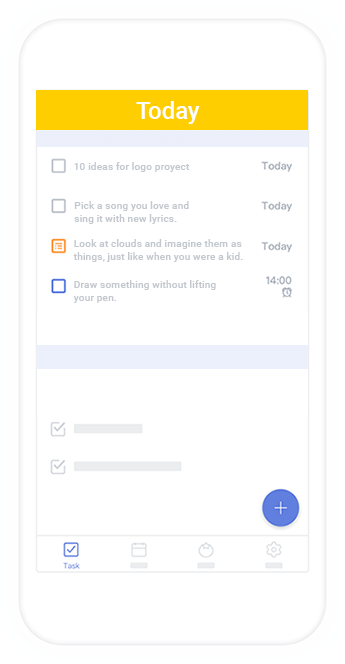
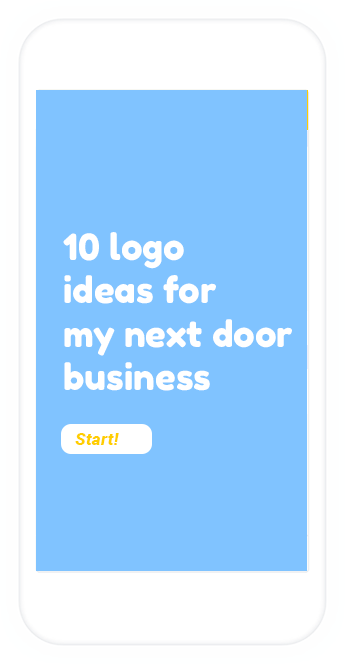

Sharpen your creative muscle everyday!
Creativity is a trait many consider to be unlearnable—they believe it arises out of innate talent or a similarly abstract aptitude. But what if I told you that there were things you could do to foster your creative side? We put together a few creativity exercises to get your imagination activated.

The perfect app for creative people
As it turns out, creativity is more akin to a learned skill than an innate quality. If we consider creativity to be the ability to extend ideas given a basic premise, this sort of extrapolation should be dependent on observing patterns and thus be trainable.

100% Creativity Booster
With scientific approved creativy booster exercises Sharpenner is the perfect app for you!